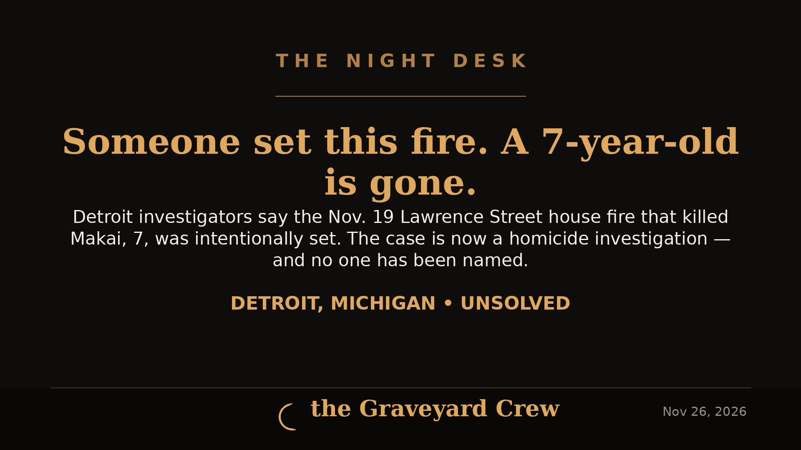

November 26, 2026 · 2 min read
Detroit fire that killed 7-year-old Makai was intentionally set, investigators say — case now a homicide

Headline card by The Night Desk
Detroit fire that killed a 7-year-old was set on purpose, investigators say
A deadly house fire on Detroit's west side was not an accident. On Wednesday, Nov. 25, the Detroit Fire Department announced that after a thorough investigation, investigators determined the fire was intentionally set, FOX 2 Detroit and WDIV ClickOnDetroit reported.
The case has been turned over to the Detroit Police Department's Homicide Division. No suspect has been named, and detectives are actively searching for whoever is responsible.
The night of Nov. 19
The fire broke out at about 2:12 a.m. on Thursday, Nov. 19 at a home in the 2900 block of Lawrence Street, between Dexter and Linwood. When the first crew arrived — in just under five minutes — the first and second floors were already fully engulfed.
Firefighters found Makai, 7, dead on the first floor during a search of the home, WDIV reported. His mother was found in the rear of the house with no pulse; crews regained her pulse and she was taken to a hospital in critical condition. Two teenagers were also taken to a hospital, one with minor smoke inhalation and one for observation.
Battalion Chief Jeffrey Urbas said at the time that the crews who found the boy were struggling with it: "We've seen this too often. It's the worst thing – you don't want a child or to find anyone, but a child is worse."
What investigators are asking
The Detroit Fire Department called it "a devastating and senseless tragedy" and said "those responsible must be held accountable."
FOX 2 Detroit reported Nov. 26 that the family is offering a reward for information on the deadly arson. Anyone with information is asked to contact:
- Detroit Police Department Homicide Division: 313-596-2260
- Detroit Fire Investigation Division: 313-628-2900
- Crime Stoppers (anonymous): 1-800-SPEAK-UP, or DetroitRewards.tv
Sources: FOX 2 Detroit, Nov. 25–26, 2026; WDIV ClickOnDetroit, Nov. 25, 2026. The victim's first name is as reported by WDIV; investigators have not named a suspect, and no motive has been released.
Source: FOX 2 Detroit — read the original report
← Back to latest stories